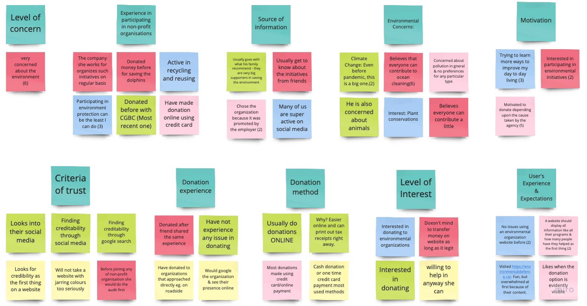

Redesigning and organizing an environmental conservation group's content-heavy website to visually communicate their goals, history, and brand.
Project background: In a UX/UI Design Bootcamp, we had a design challenge project
to design a nonprofit organization website.
Project type: Group project / Team of 4
Timeline: 4 weeks
My role: UX researcher, UX/UI designer, Logo designer
Tool used: Miro, Figma, Trello, Zoom
The problem: Pollution Probe’s current website design is dated and cluttered with
content that doesn’t communicate the organization’s mission statement clearly.
The solution: Re-designing the existing content-heavy website to a minimal,
visually communicative one with a clear brand statement.

Pollution Probe is a nonprofit group that seeks to improve Canadian's health through research,
education, promotion, and advocacy of actions to reduce pollution.
As UX/UI designers we worked with our client Sabah Ibrahim to create a digital experience that will
encourage people to become a part of the community and foster support networks to assist the
organization’s initiatives.
Stakeholder interview
We started our research by interviewing the research & communications coordinator of the Pollution Probe organization. The goal of this interview was to understand what areas and sections of the website need to be improved from the agency's point of view.
Main insights:
User research
We also conducted a survey of 40 people and 5 interviews with users who are interested in environmental conservation. The research data was synthesized into an affinity diagram and user persona.
Affinity diagram
User persona

Define problems
Problem statement:
“Environmentally concerned individuals who are eager to take action want to find ways to control/reduce pollution and its ill effects. However, they feel challenged to find the right agency as a lot of research goes into distinguishing authentic organizations from fake ones. Given their genuine interest in environmental conservation, they want to make sure that their contribution is actually utilized to make a difference. How might we help environmentally concerned individuals like Dianna access information about the initiatives that they can support to help them achieve their goal of environmental conservation so that their actions encourage more people to get aligned with this goal?”
Set our scope
After defining the problem, we went ahead and conducted the “I like, I wish, What if” brainstorming to generate ideas and also analyzed what features we would keep or change on the current website of the organization.
Brainstorming
Feature prioritization matrix
Determined main features:
Easier and more interactive website for the users
Immediately showcase Who and What the organization is all about
Featuring the Donation page they currently have and bringing some more emphasis on it on the homepage
Information architecture
As we finish establishing our ideas, we iterated the current navigational site map by conducting an open card sorting. We removed 4 sections of the current navigation and renamed 2 of them, “Our Work” from “Sectors” and “Our Research” from “Publications” to create an easier understanding for the users.
Process of prototyping
Low-Fidelity prototype
Homepage:
About:
Donation:
First user test and iteration
To determine if the redesigned website works as intended or not, we conducted our first user testing on low-fidelity prototype and iterated it based on the feedback.
Before
After

The major change we made was on the design of the donation page. In the first version, we had links to different donation options and highlighted causes above a donation form. This made users confused since they simply just wanted to donate using the form instead of seeing other options. From this data, We changed the content order and streamlined the donation process.
Hi-Fidelity prototype
Homepage:
About:
Donation:
Second user test and iteration
We performed another round of user tests on our high-fidelity prototype with the same tasks as the first user test in order to determine if the design iteration solved the problems we found from the first round of user test.
Before
After
During the testing, some users did not notice the contents under the donation form. Therefore, we added a link to see other donation options on the prompt, which users will see after making a donation, so we can encourage users to go to see other sections of the page.
Before
After
We also improved our contribution timeline on the about page to have more intuitive interaction for users by adding an indicator for the currently visible year.
Logo designing
During the stakeholder interview, they mentioned that the current logo looks very 70s design and hoping to have a new one, but they like the idea behind the current logo: wave and cloud. Therefore, I designed the organization's new logo with modern and clean look while maintaining the original concept. I also aimed to keep the number of different color use low in the logo design, so it can be easily used for printing.
Final wireframe design
Homepage:
About:
Donation:
Final prototype
Takeaway:
Having interviews with both the organization and users helped us to find the problems in each of their blind spots. To come up with solutions, it was crucial to find the overlapping point between the organization's needs and the users' needs, instead of focusing on one over the other.
Future opportunities: